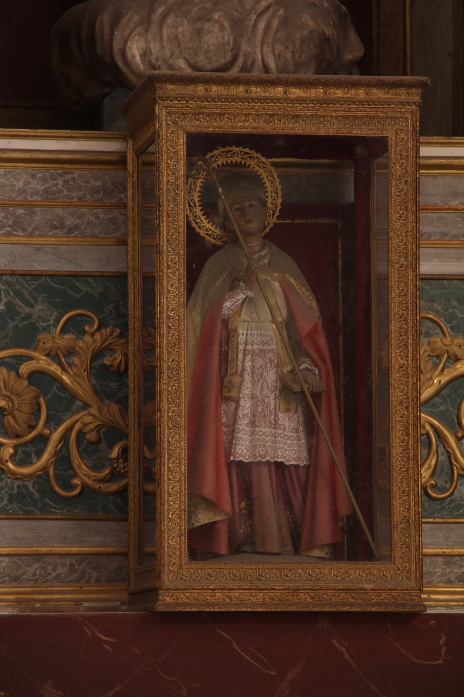

L’únic que sabem del cert de sant Marçal és que va viure al segle III i va ser el primer bisbe de Llemotges. La resta de les històries que es conten sobre ell són llegendes, i la majoria clarament incompatibles amb el segle en què visqué: per exemple, que va ser deixeble de sant Pere, el qual li donà una vara amb la qual ressuscitava els morts; que va ser servent del Sant Sopar, o que va ser el jove que dugué a Jesús els pans i els peixos perquè Jesús els multiplicàs. Gràcies a totes aquestes llegendes, sant Marçal gaudí d’un gran reconeixement arreu d’Europa.
En aquesta escultura vesteix de bisbe, amb mitra, bàcul, anell, estola i llibre litúrgic.